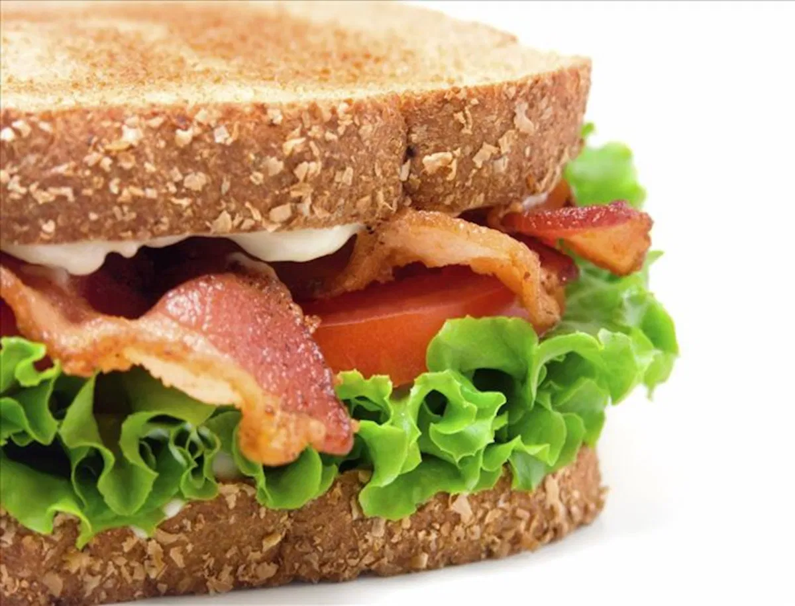
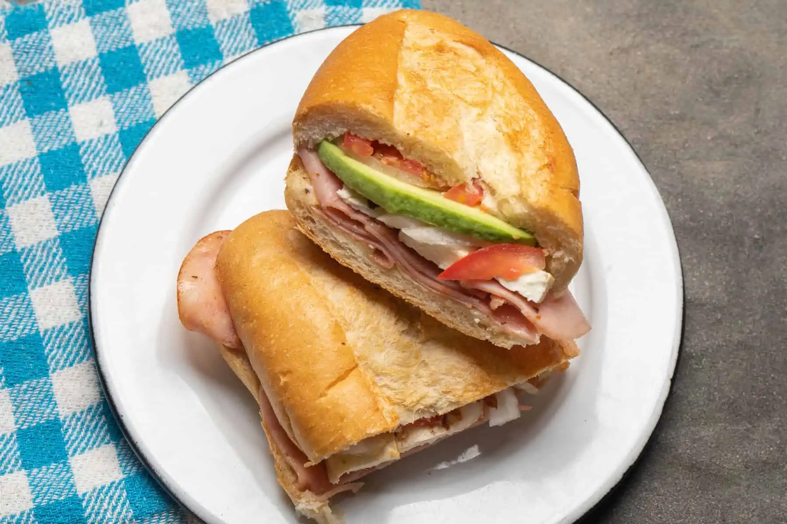

10 Estados de la Republica mexicana y 3 de sus municipios/ciudades
Aguascalientes
- Aguascalientes
- Calvillo
- El Llano
Baja California Sur
Chiapas
- Tuxtla Gutiérrez
- Tapachula
- Ocosingo
Ciudad de Mexico
- Iztapalapa
- Gustavo A. Madero
- Álvaro Obregón
Colima
- Manzanillo
- Colima
- Villa de Álvarez
Guanajuato
Hidalgo
- Pachuca de Soto
- Mineral de la Reforma
- Tulancingo de Bravo
Michoacan
Tabasco
- Centro
- Cárdenas
- Comalcalco
Veracruz
- Veracruz
- Xalapa
- Coatzacoalcos
Yucatan
Receta para un tradicional Sandwich/Torta de jamon
 
- Tomar dos rebanadas de pan de caja/o bolillo cortado a la mitad
- Untar mayonesa sobre la cara de una rebanada de pan
- Colocar jamon de su preferencia sobre la cara de la rebanada de pan que contiene mayonesa
Recomendacion: pechuga de pavo
- Colocar queso sobre el jamon
Recomendacion: queso panela
- Colocar jitmoate en rodajas
- Colocar cebolla en rodajas
- Colocar lechuga previamente desinfectada
- Agregar cualquier otro ingediente que se desee
Ejemplo: Chiles en vinagre/vinagre, catsup, mostaza, pepinillos, mortadela, milanesa, huevo, pechuga de pollo, etc.
- Colocar la segunda rebanada de pan
- A comer
5 Carreras profesionales
Enfermeria
- Bioquimica
- Genetica
- Metodologia de la investigacion
- Epidemiologia
- Reproduccion humana
Biologia
- Matematicas
- Biometria
- Biologia celular
- Fisicoquimica
- Quimica organica
Ciencias de la computacion
- Matematicas para ciencias aplicadas
- Estructuras de datos
- Probabilidad
- Analisis de algoritmos
- Inteligencia artificial
Ciencia de datos
- Calculo
- Calculo multivariable
- Metodos numericos
- Matematicas avanzadas para Ciencia de Datos
- Algebra lineal
Ingenieria en Sistemas
- Desarollo de software
- Sistemas de informacion
- Seguridad informatica
- Diseño integrado de sistemas tecnicos
- Teleinformatica